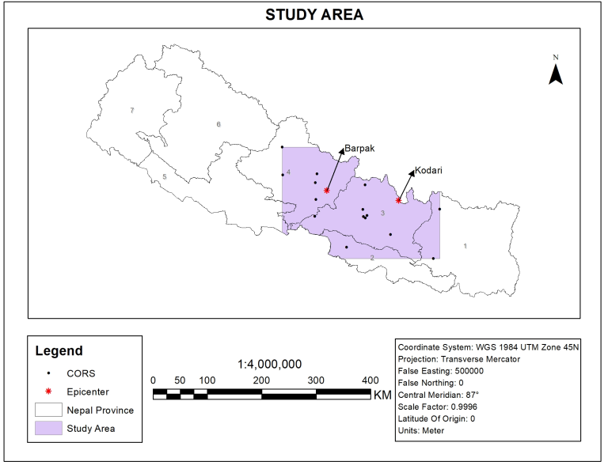
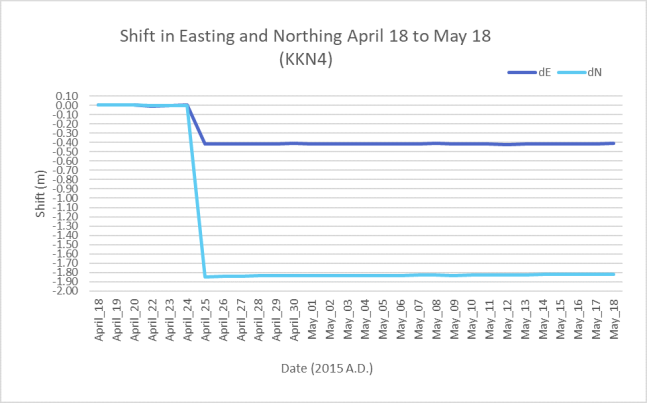
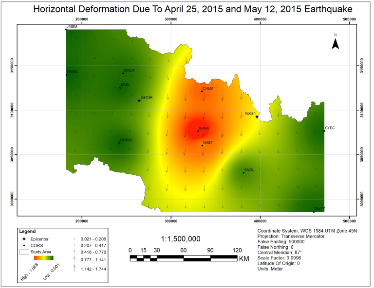
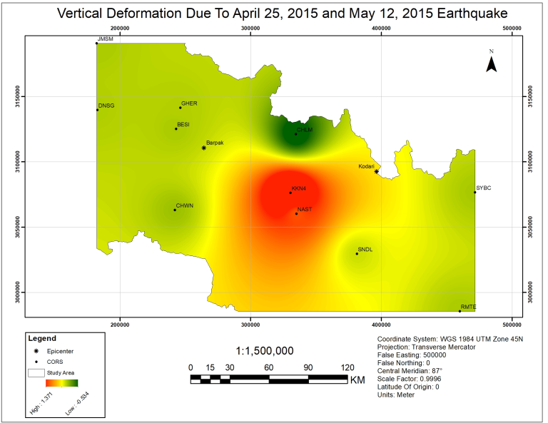
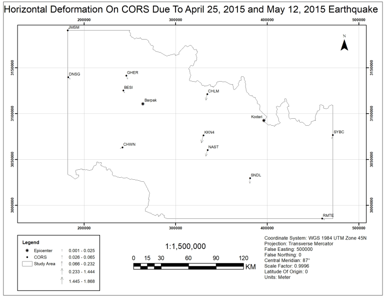

INTRODUCTION
Nepal is prone to earthquake as it lies on the boundary of Indian tectonic plate (moving north at about 45mm per year) and Eurasian plate. Indian plate is pushing and overriding Eurasian plate for long period of time and the plate get stuck at edges due to friction which causes stress that releases energy in the form of seismic wave (GeologyIn, 2015). The datum shift slightly due to various reasons such as slow continuous crustal movements, sudden movement due to earthquake and rapid movement after earthquake (aftershocks) that occur for number of days. So, the system does not remain fix for a long period of time. Hence, such shifts are shown by deformation model which mainly consists of two elements i.e. variations of earth’s movement due to long term crustal velocities and seismic deformation model due to earthquakes (Pearson C. , 2015).
OBJECTIVE
To prepare deformation model of central Nepal due to Gorkha Earthquake (April 25, 2015) and the aftershock (May 12, 2015).
STUDY AREA
Figure: Study area
METHOD ADOPTED
In order to prepare the deformation model caused by earthquake, the active Continuously Operating Reference Stations (CORS) were identified and downloaded during earthquake period. The raw data were post processed such that co-ordinates of each station were obtain in different days. The shift in Easting, Northing and Height in each station were computed. Furthermore, the Inverese Distance Weighting (IDW) interpolation technique was used for obtaining shifts throughout the study area.
RESULTS
Figure: Graph of Change in Easting and Northing April 18 to May 18 of KKN4
The figure shows the horizontal deformation of earth surface in between april 25, 2015 and may 12, 2015. The earth surface moved towards the southern part in the central part and western part whereas the western part moved towards south east direction. The central part was affected the most due to gorkha earthquake and aftershocks.
The figure shows the vertical deformation of earth surface in between April 25, 2015 and May 12, 2015. The northern part in central region was subsided whereas the central part was raised. CHLM was subsided by around half of meter and Kathmandu valley was raised by more than one meter.
The above figure shows the final shift in CORS due to the earthquake which includes the Gorkha earthquake occurred in April 25, 2015 which was followed by aftershock occurred in May 12, 2015. The figure shows the combined overall change between that periods. During that period, the central region was affected the most and there was maximum shift in stations like CHLM, KKN4 and NAST. And, the surface in the central part moved towards the south direction.
CONCLUSION
The 2015 earthquake of Nepal has caused more shift in Bagmati zone. However, there are unequal shifts in the affected regions due to unequal stress on Earth’s surface. Results of the project reveal that the Langtang valley has negatively shifted in vertical direction whereas the Kathmandu valley has positively shifted in vertical direction. The central region of the study area has shifted in south direction horizontally.
REFERENCES
The project was completed with joint action of: